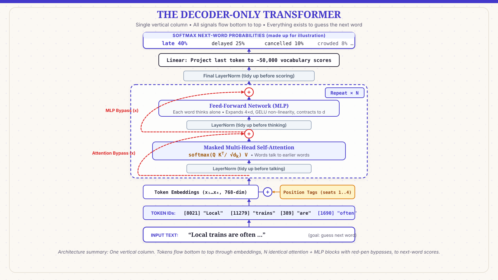
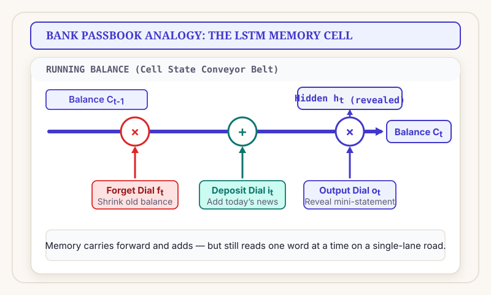
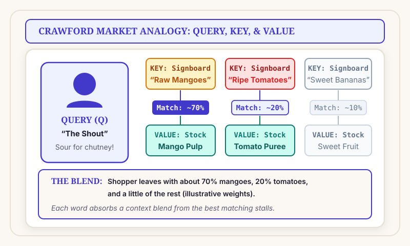
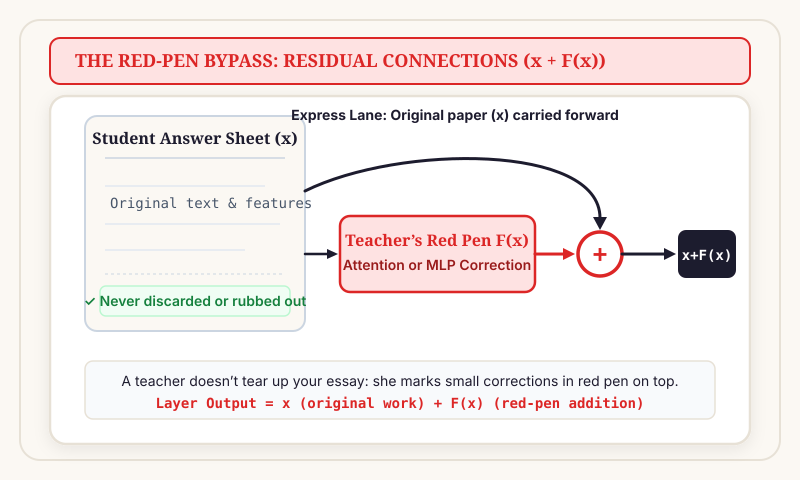

The Transformer, from Scratch
How does a machine look across long text to guess the next word? Build the complete decoder-only architecture bottom-to-top with zero maths assumed.

1. Start with the keyboard in your pocket
Let’s start with something every one of you has done today. You open WhatsApp, type “I’ll reach in about ten”, and before you finish, your phone offers a word. Have you ever wondered how it knew?
That small suggestion is the whole story of modern language models. ChatGPT, Gemini, Claude, Llama: underneath, each of them does exactly one job:
That’s all. When a model writes you an essay or a poem, it guesses a word, adds it to the text, and guesses the next one. Answering a question works the same way.
Try it yourself. Finish this sentence in your head:
“In the Mumbai monsoon, local trains are often ___.”
Most of you thought “late”. Nobody stopped to consciously calculate grammar. You used everything you know about Mumbai, trains, and monsoon rain. A machine has to do the same, and it does it by giving every possible word in its vocabulary a score, something like this:
| Next word | Chance |
|---|---|
| late | 40% |
| delayed | 25% |
| cancelled | 10% |
| crowded | 8% |
| … thousands of others | the rest |
Now here is what makes it hard. Try this sentence:
“I grew up in Chennai. I studied in Delhi, worked in Bangalore for ten years, and I have eaten in every city in India. But when I talk to my grandmother, I speak ___.”
You said Tamil. But notice where the vital clue was: Chennai was twenty words back, with Delhi and Bangalore sitting in between to distract you. A machine needs a way to look back across a long stretch of text and pick out the one clue that matters.
2. How machines read before 2017
If you had to build a machine that reads, where would you start? The earliest approach was simple n-gram counting: look at the last two or three words, and count what usually came next in a huge pile of text. That is fine for “thank you very ___”. But it is hopeless for our Chennai grandmother sentence, because to catch that clue the window would have to be twenty words wide, and the number of possible twenty-word combinations is far too astronomical to store. We needed a model that could carry memory forward.
The RNN: one clerk, one notebook page
That idea was the Recurrent Neural Network (RNN). An RNN reads a sentence one word at a time, keeping a small notebook—a short list of numbers—that summarises everything read so far. For every new word, it does the exact same three things: read the word, look at the notebook, and rewrite the notebook.
Picture a clerk reading a very long ledger, line by line. He is given only one page of notes, and after every line he must rub it out and rewrite it. By line twenty, how much of line one is still on that page?
That is the RNN’s fatal flaw: it forgets. Each rewrite blurs the older notes. It is like a game of WhatsApp forwards: by the fiftieth forward, the message barely resembles the original.
There was a second big problem: speed. To read word 100, the RNN must have finished word 99, and before that word 98. You cannot hand different words to different processors. It is a single-lane road: it doesn’t matter if you own a thousand cars.
The LSTM: a notebook that works like a passbook
In 1997, Hochreiter and Schmidhuber asked: what if the memory didn’t have to be rewritten at every step?
Think of your bank passbook. Your balance is not recalculated from scratch every morning. Yesterday’s balance carries forward, and only two transactions happen: some money leaves, and some money is deposited. When you request a mini-statement, the bank reveals only the part you ask for.

An LSTM regulates its memory using three learned dials:
- The forget dial: decides what fraction of yesterday’s balance survives.
- The input dial: decides how much of today’s news gets deposited.
- The output dial: decides how much of the balance to reveal right now.
Because memory is mostly carried rather than rewritten, signals survive much longer. But LSTMs still read one word at a time, making them inherently slow on modern hardware.
The suitcase problem
In 2014, translation models used one LSTM to read an entire English sentence and squeeze everything into a single final vector, which a second LSTM used to generate Hindi. That is like packing three months of travel into a single cabin bag: short sentences fit, but for long sentences, essential details fall out.
3. The idea of looking back (Attention)
The fix, when it arrived, was delightfully natural: don’t pack one bag. Keep all the notes on the table, and let the writer flip back to whichever page matters, at the moment it matters. A closed-book exam forces you to compress everything into memory; an open-book exam lets you look things up, provided you know where to look.
In 2014, Bahdanau, Cho, and Bengio gave models that capability: while generating each word, the model looks back across all input words and scores their relevance. Say it is generating the Hindi word for “friend” in “How are you doing today, my friend”:
| How | are | you | doing | today | my | friend |
|---|---|---|---|---|---|---|
| 2% | 1% | 3% | 2% | 4% | 8% | 80% |
It focuses 80% of its attention on “friend”, glances at “my”, and ignores the rest. This mechanism is called attention.
Interactive Demo: Who Does “they” Look At?
See how attention resolves pronoun ambiguity. In the sentence below, click different query tokens to inspect which words they attend to and see the blended content vector.
[0.28, 1.62] (leans 72% towards mangoes [0, 2])The query word “they” looks back across all prior words. The key for mangoes matches best with the pronoun query, so 72% of the content comes from mangoes. After this step, “they” carries the ripe mangoes inside it.
The 2017 leap: Attention Is All You Need
In 2017, a team at Google asked: if attention can look at any word in a single step, why do we need the slow word-by-word RNN at all? Their paper answered: we don’t. Throw the RNN away. Let every word look at every other word, all at once.
Think of the Indian Railways map: an RNN is a passenger train that must stop at every intermediate station between Mumbai and Kolkata. Attention is a direct non-stop flight connecting every pair of cities. Two enormous advantages resulted:
- Distance became one hop: Clues 100 words away are reached directly with zero degradation.
- Everything runs in parallel: All positions are computed as large matrix multiplications on GPUs. The original base model trained in just 12 hours on 8 GPUs.

Every word plays three distinct roles simultaneously:
- Query (\(Q\)): What am I looking for? (Your shout in Crawford market)
- Key (\(K\)): What do I advertise? (The signboard above each stall)
- Value (\(V\)): What do I hand over if picked? (The actual stock on the shelves)
Under the hood: the mathematical formula with shapes
Stack the \(n\) word-vectors into a table \(X\) of shape \((n \times d)\). Three learned projection matrices produce queries, keys, and values:
Then dot products score how strongly each word queries each key:
The \(S = Q K^\top\) matrix has shape \((n \times n)\). Softmax normalises each row into percentages summing to 1. The output is a weighted sum of value vectors.
Under the hood: why block the future with a causal mask?
When training a model to predict the next word, allowing word 4 to look at word 5 is like a cricket commentator guessing the next ball while the final scorecard sits in front of him. It copies rather than predicts.
We add a mask matrix \(M\) where future positions are set to \(-\infty\):
Since \(e^{-\infty} = 0\), future positions vanish from the denominator sum. A 10-word sentence provides 10 training examples in a single parallel pass!
Multiple heads & the red-pen bypass
Rather than one attention calculation, models use a panel of smaller heads side-by-side (like cricket commentators: one for bowling, one for batting, one for pitch analysis).

Under the hood: why residual connections prevent vanishing gradients
In a residual layer \(y = x + F(x)\), the gradient is \(\frac{\partial y}{\partial x} = I + \frac{\partial F}{\partial x}\). When chaining \(L\) layers together:
The expansion retains the identity matrix \(I\)—an uninterrupted express lane ensuring learning signals travel down 100 layers without fading.
4. Building the transformer on the board
Let’s build the entire machine together from the ground up in nine cumulative steps, tracking our Mumbai sentence: “Local trains are often …”. Use the controls or arrow keys to advance through each layer.
Step 1 of 9
1. Start with the Raw Text
We have four words: “Local trains are often” and one single job: guess the fifth. Everything built above this box exists only to make that one guess good.
5. The whole thing in plain words & honest costs
If someone asks you at dinner, “so what actually is a transformer?”, here is the answer you can give without needing a whiteboard:
- It chops text into pieces (tokens) and gives each piece a card of numbers that stands for its meaning.
- It stamps each card with its position, because otherwise it wouldn’t know word order.
- Then it lets words talk to each other. Every word looks back at earlier words, decides which ones matter, and absorbs some of their meaning. That is attention.
- Then each word thinks alone for a moment. That is the MLP.
- It repeats steps 3 and 4 many times, always adding corrections onto the original rather than rewriting it from scratch.
- At the top, it turns the final word’s card into a percentage chance for every possible next word.
- It learned all of this by guessing hidden next words trillions of times, being nudged each time it made an error.
The honest costs: \(O(n^2)\) attention
Attention is powerful, but it is not free. Every word compares itself with every earlier word. Imagine a wedding with 100 guests where everyone must personally greet everyone else: that is roughly 5,000 greetings. If you double the guest list to 200, it is not twice the greetings—it is four times as many (roughly 20,000 greetings).
When input text doubles in length, raw attention computation grows fourfold. Much of modern AI systems research (FlashAttention, sparse kernels, linear attention, and state-space architectures like Mamba) focuses on mitigating this quadratic wall.
6. Check your understanding
Test your grasp of the core concepts with these architectural questions. Click any question to reveal the one-line answer.
Why can’t an RNN use a thousand processors on one sentence?
Word 100 needs word 99’s notebook first, so the computation is inherently a sequential, single-lane road.
Without position tags, how would “Ram loves Sita” differ from “Sita loves Ram”?
It wouldn’t: self-attention alone treats inputs as an unordered bag of words.
Why keep the signboard (key) separate from the stock (value)?
What helps a word get found during queries isn’t necessarily the content vector it should hand over.
What goes wrong if the attention dot-product scores get too big?
One word grabs nearly 100% of the softmax weight and learning gradients vanish to near zero.
Why must the machine not see future words during training?
Otherwise it cheats by copying the next word instead of learning to predict it.
If the text doubles in length, how much more attention computation is needed?
About four times as much, due to pairwise \(n \times n\) comparisons.
Why is “add a correction” easier than “rewrite from scratch” in deep stacks?
The original input retains an uninterrupted express lane through every layer, preventing signal decay.
7. Reproduce it (Run the experiments)
Every number cited in this lesson was computed with pure NumPy. You can reproduce the experiments locally or in Google Colab:
Experiment 1: Does an RNN Forget?
import numpy as np
def rnn_memory(spectral_radius, H=64, steps=100, seed=0):
rng = np.random.default_rng(seed)
W = rng.standard_normal((H, H)) / np.sqrt(H)
W *= spectral_radius / np.max(np.abs(np.linalg.eigvals(W))) # set eigenvalue
h = rng.standard_normal(H)
J = np.eye(H) # running Jacobians
out = {}
for t in range(1, steps + 1):
h = np.tanh(W @ h + 0.1 * rng.standard_normal(H))
J = (np.diag(1 - h**2) @ W) @ J # chain rule
if t in (10, 20, 50, 100):
out[t] = np.linalg.norm(J, 2)
return out
for rho in (0.8, 1.0, 1.2):
print(f"rho={rho}:", {t: f"{v:.1e}" for t, v in rnn_memory(rho).items()})Experiment 2: Why Divide by √d_k?
import numpy as np
def softmax(x):
e = np.exp(x - x.max())
return e / e.sum()
def jac_norm(p):
return np.linalg.norm(np.diag(p) - np.outer(p, p))
rng = np.random.default_rng(0)
for d in (4, 16, 64, 256, 1024):
std, mu, ms, gu, gs = [], [], [], [], []
for _ in range(2000):
q, K = rng.standard_normal(d), rng.standard_normal((10, d))
s = K @ q
pu, ps = softmax(s), softmax(s / np.sqrt(d))
std.append(s.std()); mu.append(pu.max()); ms.append(ps.max())
gu.append(jac_norm(pu)); gs.append(jac_norm(ps))
print(f"d={d:4d} | spread={np.mean(std):5.2f} | unscaled_max={np.mean(mu):.2f} | scaled_max={np.mean(ms):.2f}")Experiment 3: Worked 3-Word Attention (“they”)
import numpy as np
softmax = lambda x: np.exp(x - x.max()) / np.exp(x - x.max()).sum()
q = np.array([1.0, 1.0]) # question asked by "they"
K = np.array([[0, 0.2], [2, 1], [0.5, 0.5]]) # keys: kept, mangoes, fridge
V = np.array([[1, 0], [0, 2], [1, 1]]) # values: kept, mangoes, fridge
weights = softmax(K @ q / np.sqrt(2))
output = weights @ V
print("Weights (kept, mangoes, fridge):", weights.round(2)) # [0.10, 0.72, 0.18]
print("Blended Output Vector :", output.round(2)) # [0.28, 1.62]8. References
- Vaswani et al., Attention Is All You Need (NeurIPS 2017). arXiv:1706.03762
- Bahdanau, Cho, Bengio, Neural Machine Translation by Jointly Learning to Align and Translate (ICLR 2015). arXiv:1409.0473
- Hochreiter & Schmidhuber, Long Short-Term Memory (Neural Computation 1997).
- Bengio, Simard, Frasconi, Learning Long-Term Dependencies with Gradient Descent is Difficult (IEEE TNN 1994).
- Sutskever, Vinyals, Le, Sequence to Sequence Learning with Neural Networks (NeurIPS 2014).
- Geva et al., Transformer Feed-Forward Layers Are Key-Value Memories (EMNLP 2021).